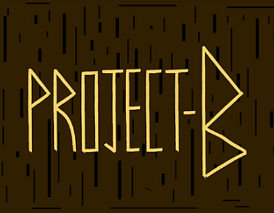

Featured Reel
This is my featured Reel
This is my featured Reel

Hello! I'm an Egyptian-Canadian game developer and audio designer passionate about crafting immersive player experiences. With expertise in audio middleware (Wwise, FMOD), sound design, music composition, field recording, and voiceover production, alongside programming proficiency in C# and C++, I specialize in end to end audio implementation. My work spans creating dynamic audio systems, composing original music, and integrating sound seamlessly into Unreal Engine and Unity to enhance both gameplay and narrative.
This is Bandcamp Profile where I upload my music Work.
This is my Pixabay Profile where I upload all my sound SFX Work.

At Eden, I contributed to the development of the Fantastic 4 game mode for the game Contest of Champions independently implementing all audio assets, ensuring seamless integration and an engaging player experience. I also set up parts of the user interface and their animations, improving visual interactions and overall interface flow. Additionally, I performed bug fixing on critical issues such as malfunctioning mastery buttons and tutorial text errors, helping deliver a smoother and more stable gameplay experience.

At Eden, I contributed to the development of the Concert of Champions event for the game Contest of Champions, implementing all sound effects to the exact detail requested by the Audio Lead, ensuring high-quality and immersive gameplay audio. I designed and built a custom SFX subsystem to integrate new mechanics requested by the Audio and Design teams, and developed multiple UI animations for the main menu and various scoreboards to enhance visual appeal and usability. I also programmed key game systems, including the Points System, Score Multiplier, and Tutorial System to support player onboarding and understanding of core mechanics. Additionally, I conducted bug fixing and addressed critical gameplay and UI issues, helping deliver improved game stability and overall polish.

In this Project I contributed to the development of Where No Light Will Follow as Project Manager, leading a team of 7 members and managing project timelines and tasks via Jira to ensure efficient workflow and on-time delivery. I created all 3D models for the game, ensuring visual consistency with the game's atmospheric tone and maintaining cohesive art direction throughout the project.

At Trinity Western University, I led the development of Shifting Kingdom as Project Lead, Audio Designer, and Programmer, managing a cross-disciplinary team of 13 members to deliver a cohesive game experience. I developed and integrated a dynamic music and SFX system into the game, ensuring audio responded seamlessly to gameplay. I composed original music for the main menu and levels 4 and 8, while creating sound effects for levels 3 and 4 to enhance environmental immersion. Additionally, I recorded, edited, and implemented voiceovers across the game, bringing characters to life and supporting the narrative throughout the player experience.

In this project I contributed to the development of Project B as Game Programmer and Co-Sound Designer, where I designed and implemented the game's dialogue system and character interactions to enhance narrative flow. I integrated UI sound effects, character voice lines, and item usage into the gameplay, creating an immersive audio experience. I also created and implemented sound effects for character actions, including attacks, deaths, and movement, ensuring cohesive audio-visual feedback. Additionally, I developed a time-based pop-up dialogue system based on player and enemy positioning, adding dynamic storytelling elements that responded to gameplay situations..